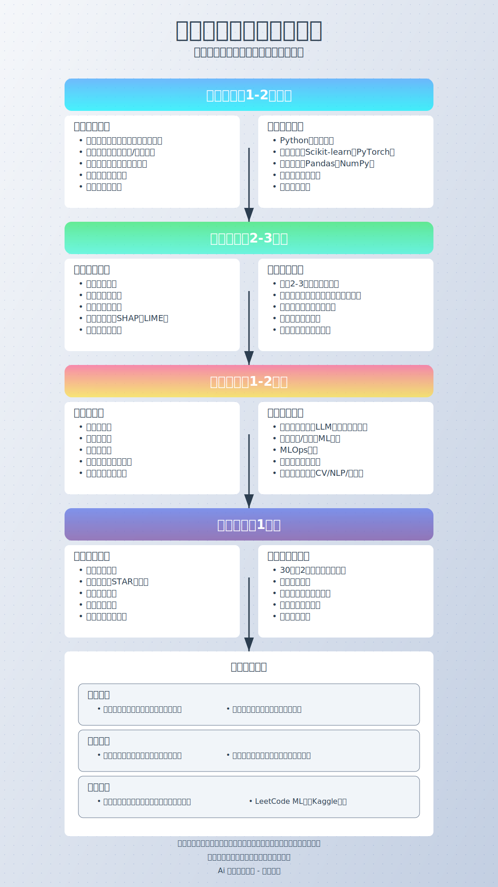

机器学习面试准备路线图

准备阶段（1-2个月）
理论基础复习
- 数学基础：线性代数、概率统计、微积分
- 机器学习算法：
- 监督学习：线性回归、逻辑回归、决策树、随机森林、SVM、KNN
- 无监督学习：K-means、层次聚类、PCA、t-SNE
- 集成方法：Bagging、Boosting、Stacking
- 深度学习基础：
- 神经网络原理
- 反向传播算法
- 优化器（SGD、Adam、RMSprop）
- 常见架构（CNN、RNN、LSTM、Transformer）
编程技能提升
- Python编程：熟练掌握数据结构、算法复杂度分析
- 框架应用：Scikit-learn、TensorFlow/PyTorch、Keras
- 数据处理：Pandas、NumPy、数据清洗与预处理
- 算法实现：手写关键算法（如梯度下降、决策树）
强化阶段（2-3周）
面试重点专题
- 特征工程：特征选择、提取和变换方法
- 模型评估：交叉验证、过拟合与欠拟合、各类评估指标
- 超参数调优：网格搜索、随机搜索、贝叶斯优化
- 模型解释性：SHAP值、LIME、特征重要性分析
实战项目准备
- 个人项目梳理：准备2-3个有深度的项目
- 问题背景
- 数据处理方法
- 模型选择理由
- 实现难点与解决方案
- 效果评估与业务价值
- 开源贡献：如有GitHub贡献，准备相关讲解
冲刺阶段（1-2周）
面试题集训
- 基础概念题：准备简洁、准确的解释
- 案例分析题：熟悉常见业务场景的解决方案
- 实现算法题：白板编程练习，如实现KNN、决策树
- 数据结构与算法：排序、搜索、动态规划等经典问题
行业知识准备
- 最新研究趋势：大型语言模型、自监督学习等热点
- 行业应用案例：了解目标公司/行业的ML应用
- MLOps基础：模型部署、监控、A/B测试
模拟面试（1周）
面试形式准备
- 技术面试：算法推导、代码实现、项目讲解
- 行为面试：STAR法则回答问题（情境、任务、行动、结果）
- 系统设计面试：ML系统架构设计
自我介绍与提问
- 简历亮点提炼：30秒和2分钟版本的自我介绍
- 准备问题：针对面试官的有深度问题
面试技巧要点
沟通展示
- 结构化回答：先给出结论，再展开细节
- 思考可视化：面试中展示思考过程，边思考边讲解
- 专业术语使用：准确使用ML术语，展示专业素养
问题应对
- 不确定问题：坦诚表达，提出解决思路
- 开放性问题：展示思考框架，循序渐进分析
- 压力型问题：保持冷静，分析问题本质
资源推荐
学习资料
- 《机器学习面试全书》、《百面机器学习》
- 《深度学习面试宝典》
- Kaggle平台竞赛与讨论区
实践平台
- LeetCode机器学习相关题目
- GitHub上的面试题集合
- 各大公司面经整理
社区交流
- 技术分享会、ML读书会
- 行业研讨会、线上论坛
面试后行动
- 复盘总结面试问题
- 针对性弥补知识漏洞
- 持续学习行业新动态